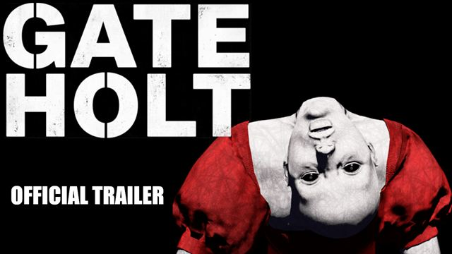

01ABOUT소개ゲーム紹介À PROPOSÜBER DAS SPIELACERCA DEL JUEGOОБ ИГРЕ关于游戏SOBRE O JOGO
Gateholt is a 1-4 player co-op horror game about entering cursed places and erasing the marks an evil spirit has left behind. Erase every mark and the spirit loses its hold on the place and disappears.
There is just one problem — it will not let you work.
YOUR JOB
Scrub away dried bloodstains, erase marks carved into the walls, burn cursed objects — 14 kinds of purification work, and counting. Each task needs a different tool.
What you bring is decided before you step inside.
ERASING MAKES IT WORSE
Every mark you erase drives the Spirit Influence down, and the lower it drops, the harder the spirit hunts you. As the Influence nears the bottom, servants wake — and the spirit itself goes on a rampage.
You have no weapon against something this fast, agile, and relentless — buy time with talismans and items, and slip out of its sight.
Progress and danger are the same meter.
NO TWO NIGHTS ARE THE SAME
Which evil spirit haunts the place, and which servants will wake, you cannot know until the Gate opens.
The spirit and the servants that wake each interfere in their own way — flooding rooms with fog, trading places with the dominant spirit, closing in the moment you look away.
What worked last time may not work tonight.
SCARY ALONE, LOUD TOGETHER
Splitting up is faster. But when things go wrong, the only ones who can save you — with a talisman, with an item — are your teammates. And if it is too late for that, carry your fallen teammate’s heart to the Revival Circle.
It is not over yet.
IF YOU MAKE IT OUT
Spend your pay upgrading your abilities and dressing up your character. And if you cannot finish, you can close the Gate and walk out.
No pay — but you walk out.
Gateholt is in development. Add it to your wishlist to hear the moment it’s out.
Gateholt는 저주받은 장소에 들어가 악령이 남긴 흔적을 지우는 1~4인 협동 공포 게임입니다. 흔적이 모두 사라지면 악령은 머물 근거를 잃고 소멸합니다.
문제는 하나 — 악령은 당신이 일하게 두지 않습니다.
당신의 일
말라붙은 핏자국을 닦고, 벽의 표식을 지우고, 저주받은 물건을 태웁니다 — 정화 작업은 14종, 계속 늘어납니다.
작업마다 필요한 도구가 다르니, 무엇을 챙겨 갈지는 들어가기 전에 정해야 합니다.
지울수록 위험해집니다
흔적을 지울 때마다 악령의 영향력이 줄어들고, 줄어들수록 악령은 당신을 더 적극적으로 찾습니다. 영향력이 바닥에 가까워질수록 권속이 깨어나고, 악령 자신이 폭주합니다.
빠르고, 기민하며, 끈질긴 악령에 맞설 무기는 없습니다 — 부적과 아이템으로 시간을 벌고, 시야에서 사라지십시오.
진행도는 곧 위험도입니다.
같은 밤은 두 번 없습니다
어떤 악령이 깃들어 있을지, 어떤 권속이 깨어날지는 게이트가 열리기 전까지 알 수 없습니다.
깨어난 악령과 권속은 저마다 다른 방식으로 방해합니다 — 안개로 공간을 잠식하고, 지배 악령과 위치를 맞바꾸고, 시선을 떼는 순간 거리를 좁힙니다.
지난번에 통하던 방법이 이번에도 통하리란 보장은 없습니다.
혼자여도 무섭습니다. 함께면 시끄러워집니다
흩어져 일하는 게 빠릅니다. 하지만 일이 터졌을 때 부적과 아이템으로 당신을 구해줄 수 있는 것도, 결국 동료뿐입니다. 너무 늦었다면 — 쓰러진 동료의 심장을 부활 마법진으로 옮기십시오.
아직 끝이 아닙니다.
살아 나오면
보수로 능력을 강화하고, 캐릭터를 꾸밉니다. 끝까지 못 하겠다 싶으면 도중에 게이트를 닫고 나와도 됩니다.
보수는 없지만, 살아서 나올 수 있습니다.
Gateholt는 현재 개발 중입니다. 위시리스트에 추가하면 출시 소식을 가장 먼저 받아볼 수 있습니다.
Gateholtは、呪われた場所に入り、悪霊が残した痕跡を消していく1〜4人用の協力ホラーゲームです。痕跡がすべて消えると、悪霊はそこに留まる拠り所を失い、消滅します。
問題はひとつ——悪霊はあなたを働かせてはくれません。
あなたの仕事
乾いた血痕を拭き取り、壁に刻まれた印を消し、呪われた物を燃やします——浄化作業は14種類、これからも増えていきます。作業ごとに必要な道具が違います。
何を持って入るかは、入る前に決めておく必要があります。
消すほど危険になる
痕跡を消すたびに悪霊の影響力が下がり、下がるほど悪霊はあなたをより積極的に探します。影響力が底に近づくにつれて眷属が目を覚まし、悪霊自身が暴走します。
速く、俊敏で、執拗な悪霊に立ち向かう武器はありません——お札やアイテムで時間を稼ぎ、その視界から消えてください。
進行度がそのまま危険度です。
同じ夜は二度とない
どの悪霊が棲みついているのか、どの眷属が目を覚ますのかは、ゲートが開くまで分かりません。
目を覚ました悪霊と眷属は、それぞれ違うやり方で邪魔をします——霧で空間を覆い、支配する悪霊と位置を入れ替え、目を離した瞬間に距離を詰めます。
前回通用した方法が今回も通用するとは限りません。
ひとりでも怖い。一緒なら騒がしい
散らばって作業したほうが速く進みます。それでも、いざという時にお札やアイテムであなたを救えるのは、結局仲間だけです。手遅れなら——倒れた仲間の心臓を蘇生の魔法陣まで運んでください。
まだ終わりではありません。
生きて出られたら
報酬で能力を強化し、キャラクターを着飾ります。最後までやり切れないと思ったら、途中でゲートを閉じて出てきても構いません。
報酬はありませんが、生きて出ることはできます。
Gateholtは現在開発中です。ウィッシュリストに追加すると、リリースのお知らせをいち早く受け取れます。
Gateholt est un jeu d'horreur coopératif de 1 à 4 joueurs où tu pénètres dans des lieux maudits pour effacer les marques laissées par un esprit maléfique. Quand toutes les marques ont disparu, l'esprit maléfique perd toute prise sur le lieu et s'éteint.
Un seul problème — il ne te laisse pas travailler.
TON TRAVAIL
Nettoie les traces de sang séchées, efface les marques gravées dans les murs, brûle les objets maudits — 14 types de travaux de purification, et la liste s'allonge. Chaque tâche demande un outil différent.
Ce que tu emportes doit être décidé avant d'entrer.
PLUS TU EFFACES, PLUS C'EST DANGEREUX
Chaque marque effacée fait baisser l'Influence de l'esprit maléfique, et plus elle baisse, plus l'esprit maléfique te cherche activement. À mesure qu'elle approche du fond, les serviteurs s'éveillent et l'esprit maléfique lui-même se déchaîne.
Contre un esprit aussi rapide, agile et tenace, tu n'as aucune arme — gagne du temps avec les talismans et les objets, puis disparais de sa vue.
La progression et le danger ne font qu'un.
AUCUNE NUIT NE SE RESSEMBLE
Quel esprit maléfique habite le lieu et quels serviteurs s'éveilleront, tu ne peux pas le savoir avant l'ouverture du Portail.
L'esprit maléfique et les serviteurs éveillés ont chacun leur manière de te gêner — envahir l'espace de brume, échanger sa place avec l'esprit dominant, réduire la distance dès que tu détournes le regard.
Rien ne garantit que ce qui a marché la dernière fois marchera encore.
SEUL, C'EST TERRIFIANT. À PLUSIEURS, C'EST BRUYANT
Se disperser va plus vite. Mais quand tout dérape, les seuls à pouvoir te sauver — d'un talisman, d'un objet — sont tes coéquipiers. Et s'il est trop tard, porte le cœur de ton coéquipier tombé jusqu'au cercle de résurrection.
Rien n'est encore fini.
SI TU RESSORS VIVANT
Ta récompense sert à améliorer tes capacités et à habiller ton personnage. Si tu sens que tu n'iras pas jusqu'au bout, tu peux refermer le Portail en chemin et ressortir.
Pas de récompense, mais tu ressors vivant.
Gateholt est en cours de développement. Ajoute-le à ta liste de souhaits pour être informé en premier de sa sortie.
Gateholt ist ein kooperatives Horrorspiel für 1 bis 4 Spieler, in dem du verfluchte Orte betrittst und die Male tilgst, die ein böser Geist hinterlassen hat. Sind alle Male verschwunden, verliert der böse Geist jeden Halt an dem Ort und vergeht.
Nur ein Problem — er lässt dich nicht arbeiten.
DEINE ARBEIT
Wisch eingetrocknete Blutflecken weg, tilge die in die Wände geritzten Zeichen, verbrenne verfluchte Gegenstände — 14 Arten von Reinigungsarbeiten, und es werden mehr. Jede Aufgabe verlangt ein anderes Werkzeug.
Was du mitnimmst, musst du vor dem Betreten entscheiden.
JE MEHR DU TILGST, DESTO GEFÄHRLICHER WIRD ES
Jedes getilgte Mal senkt den Einfluss des bösen Geistes, und je tiefer er sinkt, desto entschlossener sucht der böse Geist nach dir. Nähert sich der Einfluss dem Boden, erwachen die Diener — und der böse Geist selbst gerät in Raserei.
Gegen einen so schnellen, flinken und unerbittlichen Geist hast du keine Waffe — gewinn mit Talismanen und Gegenständen Zeit und verschwinde aus seinem Blickfeld.
Fortschritt und Gefahr sind dasselbe.
KEINE NACHT GLEICHT DER ANDEREN
Welcher böse Geist an einem Ort haust und welche Diener erwachen, weißt du nicht, bevor sich das Tor öffnet.
Der böse Geist und die erwachten Diener stören jeweils auf ihre eigene Art — Räume mit Nebel überziehen, den Platz mit dem beherrschenden Geist tauschen, den Abstand verkürzen, sobald du wegsiehst.
Dass das, was beim letzten Mal funktioniert hat, auch diesmal funktioniert, ist nicht gesagt.
ALLEIN IST ES UNHEIMLICH, ZUSAMMEN WIRD ES LAUT
Getrennt geht die Arbeit schneller. Doch wenn etwas schiefgeht, sind es am Ende deine Mitspieler, die dich retten können — mit einem Talisman, mit einem Gegenstand. Und ist es dafür zu spät, trag das Herz deines gefallenen Mitspielers zum Wiederbelebungskreis.
Noch ist nichts vorbei.
WENN DU LEBEND HERAUSKOMMST
Von der Belohnung verbesserst du deine Fähigkeiten und stattest deinen Charakter neu aus. Wenn du merkst, dass du es nicht bis zum Ende schaffst, kannst du das Tor unterwegs schließen und hinausgehen.
Keine Belohnung, aber du kommst lebend heraus.
Gateholt befindet sich in Entwicklung. Setz es auf deine Wunschliste, um als Erster von der Veröffentlichung zu erfahren.
Gateholt es un juego de terror cooperativo para 1-4 jugadores en el que entras en lugares malditos y borras las marcas que ha dejado un espíritu maligno. Cuando no queda ninguna marca, el espíritu maligno pierde aquello que lo retiene en el lugar y se desvanece.
Solo hay un problema — el espíritu maligno no te deja trabajar.
TU TRABAJO
Limpia las manchas de sangre reseca, borra las marcas grabadas en las paredes, quema los objetos malditos — 14 tipos de labores de purificación, y la lista sigue creciendo. Cada tarea necesita una herramienta distinta.
Lo que llevas contigo se decide antes de entrar.
CUANTO MÁS BORRAS, MÁS PELIGRO
Cada marca que borras hace bajar la Influencia del espíritu maligno, y cuanto más baja, con más empeño te busca el espíritu maligno. A medida que se acerca al fondo, despiertan los sirvientes y el propio espíritu maligno se desata.
Contra un espíritu tan rápido, ágil y tenaz no tienes arma alguna — gana tiempo con talismanes y objetos, y desaparece de su vista.
El progreso y el peligro son lo mismo.
NINGUNA NOCHE SE REPITE
Qué espíritu maligno habita el lugar y qué sirvientes despertarán no se sabe hasta que el Portal se abre.
El espíritu maligno y los sirvientes que despiertan estorban cada uno a su manera — invaden el espacio con niebla, intercambian su posición con el espíritu dominante, acortan la distancia en cuanto apartas la vista.
Nada garantiza que lo que funcionó la última vez vuelva a funcionar.
A SOLAS DA MIEDO. JUNTOS, HAY RUIDO
Separarse es más rápido. Pero cuando algo sale mal, los únicos que pueden salvarte — con un talismán, con un objeto — son tus compañeros. Y si ya es tarde, lleva el corazón de tu compañero caído al círculo de resurrección.
Aún no ha terminado.
SI SALES CON VIDA
Con la recompensa mejoras tus capacidades y vistes a tu personaje. Y si ves que no vas a poder terminar, puedes cerrar el Portal a medio camino y salir.
Sin recompensa, pero vivo.
Gateholt está en desarrollo. Añádelo a tu lista de deseados y serás el primero en enterarte de su lanzamiento.
Gateholt — кооперативный хоррор на 1–4 игроков о том, как ты входишь в проклятые места и стираешь метки, оставленные злым духом. Когда исчезнут все метки, злой дух теряет опору в этом месте и исчезает.
Проблема одна — он не даст тебе работать.
ТВОЯ РАБОТА
Вытирай засохшие пятна крови, стирай вырезанные на стенах знаки, сжигай проклятые предметы — всего 14 видов работ по очищению, и список растёт. Для каждой задачи нужен свой инструмент.
Что взять с собой, решается до того, как ты войдёшь.
ЧЕМ БОЛЬШЕ СОТРЁШЬ, ТЕМ ОПАСНЕЕ
С каждой стёртой меткой Влияние злого духа падает, и чем ниже оно опускается, тем настойчивее злой дух тебя ищет. По мере того как влияние приближается ко дну, просыпаются прислужники, а сам злой дух впадает в буйство.
Против такого быстрого, ловкого и неотступного духа оружия у тебя нет — выигрывай время талисманами и предметами и исчезай у него из виду.
Продвижение и опасность — одно и то же.
ДВУХ ОДИНАКОВЫХ НОЧЕЙ НЕ БЫВАЕТ
Какой злой дух поселился в этом месте и какие прислужники проснутся, не узнать, пока не откроются Врата.
Проснувшиеся злой дух и прислужники мешают каждый по-своему — затягивают помещения мглой, меняются местами с главенствующим духом, сокращают расстояние в тот миг, когда ты отводишь взгляд.
То, что сработало в прошлый раз, в этот раз может не сработать.
ОДНОМУ СТРАШНО. ВМЕСТЕ — ШУМНО
Врозь работа идёт быстрее. Но когда случается беда, спасти тебя — талисманом, предметом — могут только товарищи. А если уже поздно, отнеси сердце павшего товарища к Кругу воскрешения.
Ещё не всё кончено.
ЕСЛИ ВЫЙДЕШЬ ЖИВЫМ
На награду улучшаешь способности и одеваешь персонажа. А если понимаешь, что до конца не дотянешь, можно закрыть Врата на полпути и уйти.
Награды не будет, но ты выйдешь живым.
Gateholt находится в разработке. Добавь игру в список желаемого, чтобы первым узнать о выходе.
Gateholt 是一款 1~4 人合作恐怖游戏，你踏入被诅咒的场所，抹去恶灵留下的痕迹。痕迹尽数消失后，恶灵便失去停留的依凭，就此消散。
问题只有一个：恶灵不会让你安心干活。
你的工作
擦掉干涸的血迹，擦除刻在墙上的标记，焚烧被诅咒的物件——净化工作共 14 种，而且还在增加。每项工作需要的工具各不相同。
带什么进去，要在踏入之前定好。
越擦越危险
每抹去一道痕迹，恶灵的影响力就下降一分；降得越低，恶灵找你找得越凶。随着影响力逼近谷底，眷属苏醒，恶灵自己也会暴走。
面对如此迅捷、机敏、纠缠不休的恶灵，你没有可以对抗的武器——用符咒和物品争取时间，然后从它的视野中消失。
进度就是危险度。
没有两个相同的夜晚
这里盘踞着哪一只恶灵、会有哪些眷属苏醒，在鬼门开启之前都无从知晓。
苏醒的恶灵与眷属各有各的妨碍方式：用雾笼罩空间，与支配恶灵互换位置，在你移开视线的那一刻拉近距离。
上一次管用的办法，这一次未必还管用。
一个人很可怕，一群人很吵
分头干活推进更快。但出事的时候，能用符咒和物品救你的，终究只有同伴。要是已经太迟，就把倒下同伴的心脏搬到复活法阵去。
一切还没有结束。
活着出来之后
用报酬强化能力、装扮角色。若是觉得撑不到最后，中途关上鬼门走出来也可以。
虽然拿不到报酬，但能活着出来。
Gateholt 目前正在开发中。加入愿望单，即可第一时间收到发售消息。
Gateholt é um jogo de terror cooperativo para 1-4 jogadores em que você entra em lugares amaldiçoados e apaga as marcas deixadas por um espírito maligno. Quando não resta nenhuma marca, o espírito maligno perde aquilo que o prende ao lugar e desaparece.
Só existe um problema — o espírito maligno não deixa você trabalhar.
SEU TRABALHO
Limpe as manchas de sangue seco, apague as marcas gravadas nas paredes, queime os objetos amaldiçoados — 14 tipos de trabalhos de purificação, e a lista continua crescendo. Cada tarefa exige uma ferramenta diferente.
O que você leva é decidido antes de entrar.
QUANTO MAIS VOCÊ APAGA, MAIOR O PERIGO
Cada marca apagada faz a Influência do espírito maligno cair, e quanto mais ela cai, com mais empenho o espírito maligno procura você. Conforme ela se aproxima do fundo, os servos despertam e o próprio espírito maligno entra em fúria.
Contra um espírito tão rápido, ágil e persistente, você não tem arma — ganhe tempo com talismãs e itens, e suma da vista dele.
O progresso e o perigo são a mesma coisa.
NENHUMA NOITE SE REPETE
Qual espírito maligno habita o lugar e quais servos vão despertar, você não sabe até o Portal se abrir.
O espírito maligno e os servos que despertam atrapalham cada um à sua maneira — tomam o espaço com névoa, trocam de lugar com o espírito dominante, encurtam a distância no instante em que você desvia o olhar.
Nada garante que o que funcionou da última vez funcione de novo.
SOZINHO DÁ MEDO. JUNTOS, FAZ BARULHO
Se separar é mais rápido. Mas quando algo dá errado, os únicos que podem salvar você — com um talismã, com um item — são seus companheiros. E se já for tarde demais, leve o coração do companheiro caído até o círculo de ressurreição.
Ainda não acabou.
SE VOCÊ SAIR COM VIDA
Com a recompensa você melhora suas capacidades e veste seu personagem. E se achar que não vai conseguir terminar, pode fechar o Portal no meio do caminho e sair.
Sem recompensa, mas vivo.
Gateholt está em desenvolvimento. Adicione à sua lista de desejos para saber do lançamento em primeira mão.
02FEATURES특징特徴CARACTÉRISTIQUESMERKMALECARACTERÍSTICASОСОБЕННОСТИ特色CARACTERÍSTICAS
- Online co-op for 1-4 players — solo runs supported
- Horror without weapons — run, hide, hold on with your items
- A different spirit-and-servant combination every run
- Distance-based proximity voice chat
- Random, unscripted jump scares and directional 3D audio
- 1~4인 온라인 협동 — 혼자서도 들어갈 수 있습니다
- 무기 없는 공포 — 도망치고, 숨고, 아이템으로 버티십시오
- 매판 달라지는 악령과 권속의 조합
- 거리 기반 근접 보이스 챗
- 예고 없는 무작위 점프스케어와 방향이 살아 있는 3D 사운드
- 1〜4人のオンライン協力プレイ——ひとりでも入れます
- 武器のないホラー——逃げて、隠れて、アイテムで耐えてください
- 毎回変わる悪霊と眷属の組み合わせ
- 距離に応じた近接ボイスチャット
- 予告のないランダムなジャンプスケアと方向の分かる3Dサウンド
- Coopération en ligne de 1 à 4 joueurs — tu peux aussi entrer seul
- De l'horreur sans armes — fuis, cache-toi, tiens bon avec tes objets
- Une combinaison d'esprit maléfique et de serviteurs différente à chaque partie
- Chat vocal de proximité basé sur la distance
- Des jumpscares aléatoires et sans prévenir, un son 3D directionnel
- Online-Koop für 1 bis 4 Spieler — du kannst auch allein hineingehen
- Horror ohne Waffen — flieh, versteck dich, halt mit deinen Gegenständen durch
- Eine bei jeder Partie andere Kombination aus bösem Geist und Dienern
- Entfernungsbasierter Nahbereichs-Sprachchat
- Zufällige Jumpscares ohne Vorwarnung und richtungstreuer 3D-Sound
- Cooperativo en línea para 1-4 jugadores — también en solitario
- Terror sin armas — huye, escóndete, aguanta con tus objetos
- Una combinación distinta de espíritu maligno y sirvientes en cada partida
- Chat de voz de proximidad basado en la distancia
- Sustos aleatorios y sin aviso, sonido 3D direccional
- Онлайн-кооператив на 1–4 игроков — можно зайти и в одиночку
- Хоррор без оружия — беги, прячься, держись с помощью предметов
- Своё сочетание злого духа и прислужников в каждом заходе
- Голосовой чат ближнего радиуса с учётом расстояния
- Случайные скримеры без предупреждения и направленный 3D-звук
- 1~4 人在线合作，一个人也能进
- 没有武器的恐怖：逃跑、躲藏、靠物品撑下去
- 每一局都不同的恶灵与眷属组合
- 基于距离的近距离语音聊天
- 毫无预兆的随机惊吓与方向分明的 3D 音效
- Cooperativo online para 1-4 jogadores — também sozinho
- Terror sem armas — fuja, se esconda, aguente com seus itens
- Uma combinação diferente de espírito maligno e servos a cada partida
- Chat de voz por proximidade baseado na distância
- Sustos aleatórios e sem aviso, áudio 3D direcional
03TRAILER트레일러トレーラーBANDE-ANNONCETRAILERTRÁILERТРЕЙЛЕР预告片TRAILER
04SCREENSHOTS스크린샷スクリーンショットCAPTURES D'ÉCRANSCREENSHOTSCAPTURAS DE PANTALLAСКРИНШОТЫ游戏截图CAPTURAS DE TELA
Click to enlarge — originals are 1920×1080 and included in the ZIP.클릭하면 크게 보이며, 1920×1080 원본은 ZIP에 포함되어 있습니다.クリックで拡大 — 1920×1080の原本はZIPにも含まれています。Clique pour agrandir — les originaux en 1920×1080 sont inclus dans le ZIP.Zum Vergrößern klicken — Originale (1920×1080) sind im ZIP enthalten.Haz clic para ampliar — los originales (1920×1080) están incluidos en el ZIP.Нажми, чтобы увеличить — оригиналы 1920×1080 включены в ZIP.点击放大，1920×1080 原图已包含在 ZIP 中。Clique para ampliar — os originais (1920×1080) estão incluídos no ZIP.
05LOGO & KEY ART로고 & 키아트ロゴ & キーアートLOGO & ILLUSTRATIONSLOGO & KEY ARTLOGO Y ARTEЛОГОТИП И АРТ标志与主视觉LOGO & KEY ART
{kind=link}
{kind=link}

{kind=link}

{kind=link}

{kind=link}

{kind=link}

{kind=link}

{kind=link}
Logos, key art and all screenshots in one archive.로고, 키아트, 전체 스크린샷을 하나의 압축 파일로 제공합니다.ロゴ、キーアート、全スクリーンショットを1つのアーカイブで。Logos, illustrations et toutes les captures d'écran dans une seule archive.Logos, Key Art und alle Screenshots in einem Archiv.Logos, arte y todas las capturas en un solo archivo.Логотипы, арт и все скриншоты одним архивом.标志、主视觉与全部截图打包为一个压缩文件。Logos, key art e todas as capturas em um único arquivo.